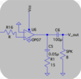

TruthDrift - AI Hallucination Detector
April - May 2026
- Developed an ML model using Python libraries utilizing features such as TF-IDF, Jaccard Similarity, Cosine Similarity, and GloVe embeddings to identify AI generated text hallucinations.
- Developed a Streamlit UI with per-sentence predictions and confidence scores for user inputted AI generated text.
- Improved model accuracy by around 10% via removing low-value GloVe embeddings during future iterations
____________________________________________
EWI: Electronic Wind Instrument
January - May 2026
- Captained a team to design & build a fully functional electronic wind instrument on the RP2350 microcontroller.
- Implemented tremolo in embedded C via I2C to an AD5693 DAC, with GPIO button control.
- Programmed & wired SPI-driven LCD display to render ”EWI” in custom pixel art lettering.
____________________________________________

Audio Amplifier
April - May 2025
- Designed and built a circuit-based analog multi-band audio equalizer with adjustable bass, mid-range, and treble using RC low-, band-, and high-pass filters and op-amps.
- Simulated and validated complete circuit via SPICE tools prior to hardware implementation.
- Characterized frequency response and output power using oscilloscope-based measurements.